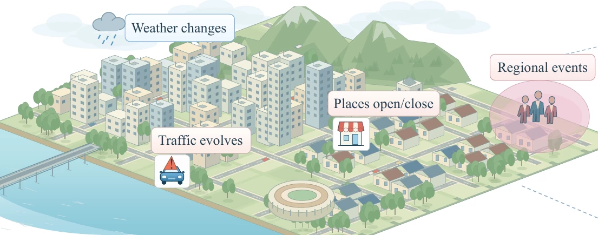
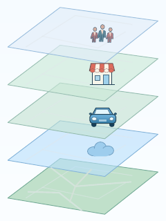
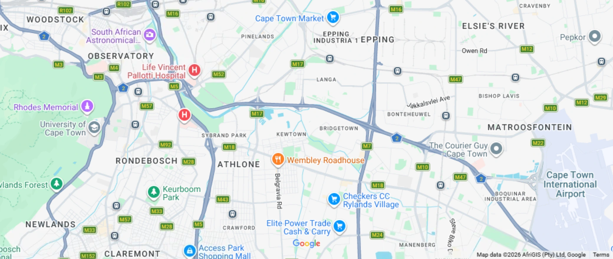

Abstract
We introduce GeoWorld, a controllable and continuously evolving geographic environment for LLM agents, and LiveGeo, a benchmark built on GeoWorld to evaluate reliable geographic decision-making. Existing evaluations typically ask agents to reason and plan over fixed geographic states. GeoWorld is grounded in real-world geography and lets external conditions evolve over time independently of agent actions, while preserving verifiable histories of world states. LiveGeo places geographic tasks in this evolving environment, requiring agents to actively seek task-relevant information, check whether the evidence behind earlier decisions still holds, and revise their plans when necessary.
Even frontier LLMs struggle with static tasks, and no model consistently excels across task categories. Strong static performance does not ensure reliability under changing conditions. Our analysis shows that agents often miss relevant changes and can still make invalid decisions after observing every necessary update. By releasing LiveGeo alongside GeoWorld, we aim to provide an extensible platform for studying how agents make and maintain valid decisions in evolving geographic worlds.
LiveGeo in numbers
1,237
task instances
1,088 static + 149 dynamic
7 + 1
Static + Dynamic
3 atomic + 4 compositional + 1 dynamic suite
6
real-world cities
1,376 points of interest
9
evaluated models
3 independent runs per task
01 / RESEARCH QUESTION
Can agents make and maintain valid geographic decisions as the world changes?
As conditions change, agents need to check whether the evidence behind an earlier decision still holds and revise the decision when necessary.
02 / GEOWORLD
A changing world.
A changing world.
A verifiable interaction history.
A persistent geographic environment in which heterogeneous world states are grounded in a shared spatial structure and evolve along a common timeline, while every agent interaction is recorded against the world state at which it occurred.
Hover or tap any part of the diagram.


- Events
- Place status
- Traffic
- Weather
- Static structure
Agent interaction
GeoWorld lets us replay a task from the same starting state. LiveGeo uses that capability to compare static and dynamic versions of selected tasks.
03 / LIVEGEOA benchmark for geographic
A benchmark for geographic
decision-making
Task categoryDecision dependency
Atomic · establish local validity
Grounding
Resolve visual or textual evidence to the exact geographic entity.
Discovery
Translate intent into destinations satisfying joint spatial, service, and preference requirements.
Mobility Planning
Satisfy journey requirements, including waypoints, dwell times, modes, and deadlines.
Compositional · compose jointly valid decisions
Multi-Entity
Coordinate location and availability constraints across participants.
Long-Horizon
Preserve downstream feasibility across linked activities and time windows.
Safety-Aware
Ground destination and access-route choices in relevant safety evidence.
Region-Aware
Use regional practices, schedules, and geographic context to constrain valid choices.
+ Dynamic Tasks
Selected static tasks gain time-stamped events. Agents reassess their earlier decisions when those events change the conditions.
Build geographic tasks with GeoWorld
How decisions are verified
LiveGeo evaluates agents along four dimensions. The checks that apply depend on the task.
Decision correctness
Does the final choice satisfy task-specific correctness criteria?
Plan executability
Are the spatial, temporal, transport, and operational constraints met?
Evidence support
Do the recorded observations substantiate the agent’s decision?
Dynamic adaptability
Does the agent respond appropriately to task-relevant changes?
What counts as success?
Select the correct place through the tool and name it correctly in the final response. Both the tool selection and the final place name must be correct.
Submit a complete place selection. The submitted name and coordinates must match the same entry in the verified set of acceptable answers.
Judge trip feasibility correctly and pass at least four of the six remaining checks. These cover route connectivity, required stops in order, allowed transport modes, total time including stops, walking distance, and the tool-call budget.
Select the correct meeting place. Place selection determines whether the task passes. Five separate checks describe how the agent handled feasibility, budget, dietary needs, shared availability, and participant notifications.
Submit a complete itinerary that works across all days. The submission must correctly judge feasibility and uniquely identify each required stop in order. The itinerary must match an accepted plan or be verified as a feasible alternative.
Choose a valid destination and support the choice with the required safety notices. The agent must declare the task feasible, meet all applicable constraints, and obtain and faithfully report the required notices through the tools.
Declare the task feasible and select a destination that fits the regional requirements. The submitted name and coordinates must identify the same place in the verified set of acceptable answers.
Observe and report every task-bound event, then submit the correct post-event decision. After the initial checkpoint, the agent must obtain each event through its App and reproduce its full public message verbatim. The structured output must be valid. The evaluator also requires the percentage of applicable checks passed in that run to be at least 70% after rounding.
04 / EXPERIMENTS
Evaluating geographic agents
Evaluation environment
World coverage
- Real-world cities
- 6
- Regions
- 88
- Points of interest
- 1,376
- Cached routes
- 107,372
Task composition
1,237 task instances
478 Atomic
610 Compositional
149 Matched dynamic
Experimental setup
All nine models use the same ReAct framework and tool-access protocol. Each model runs each task three times independently, with up to 50 interaction steps per run.
The matched evaluation uses the same 149 tasks in three settings.
Example task. Can you drive from MorganCargo to Dis-Chem Claremont Pharmacy within 56 minutes, including a mandatory 20-minute meeting at PEP Cape Town Woodstock?

- MorganCargoStart
- PEP Cape Town Woodstock20-minute meeting
- Dis-Chem Claremont PharmacyDestination
- Initial estimate49 min 22 s17 min 38 s driving + 20 min meeting + 11 min 44 s driving.
- Events in this setting
Road conditions stay fixed across both driving legs.
13:20 · N2 traffic alert A collision near the Roodebloem Road exit slows one section of the N2. The 12-minute delay applies only to the first leg toward Woodstock.
Off-route closure leaves the trip unchanged. Illustrative
- Assessment of the same trip49 min 22 sWithin the 56-minute limit.
Estimated trip duration (min:sec)49:22 / 56:00 limit
Agent Interaction Protocol
Runtime settings · Full visible interaction history retained · Temperature 0.1 · Up to 10,000 generated tokens per turn
Receive the task
The agent receives the task instructions, App catalog, and user request.
Thought → Action → Observation
Each ReAct turn allows up to one tool call. The returned observation is added to the interaction history.
Submit the decision
The agent explicitly submits a final answer in the format required for the task.
Dynamic runs
- Submit an initial plan and a later query time
- GeoWorld advances time and scheduled events take effect
- The agent actively queries Apps for updates
- Submit the final decision
Main results
Task success rate (%) · mean ± standard error
Swipe the table to view every task column →
1,088 static tasks across seven categories.
Bold marks the best mean in each column.
05 / FINDINGS
Making and maintaining valid geographic decisions
F1
Geographic decision-making under fixed conditions
Static decisions remain difficult
Even the strongest model succeeded on fewer than three in ten tasks across the full static benchmark.
Gemini 3.7 FlashHighest
Claude Sonnet 5Median model
Kimi K3Lowest
Nine models · 1,088 static tasks · Weighted by category size
The stronger model depends on the task
Gemini leads on Grounding and Discovery. GPT-5.6 Sol pulls ahead on Mobility Planning.
Gemini 3.7 FlashGPT-5.6 Sol
Grounding
Discovery
Mobility Planning
Safety checks and dependent steps are harder
Mean success across nine models on three compositional task categories.
Multi-EntityCoordinate explicit requirements across participants.
Safety-AwareCheck safety conditions for the destination or access route.
Long-HorizonKeep later steps feasible as earlier choices limit the options.
Finding 1
Geographic decision-making limitations extend beyond satisfying explicit constraints.
Agents do relatively better when coordinating several participants’ explicit requirements. They struggle more when a decision requires checking safety conditions or keeping interdependent steps feasible, even in a fixed world.
F2–F3
Decision validity in an evolving world
Across nine models on the same 149 tasks, mean success falls from 19.1% in Static to 5.7% in Task-Only and 4.0% in Shared.
| Model | Mobility | Multi-Entity | Long-Horizon | Safety | Region |
|---|
+40 pp0−40 pp
Change from matched Static in percentage points. Positive values indicate improvement.
Finding 2
World evolution slashes success; static strength does not predict dynamic robustness.
World changes cause substantial performance degradation, with markedly different levels of performance retention across models and task categories. This exposes vulnerabilities that are not captured by evaluating decisions against a fixed geographic state.
Task success rate (%)
GPT-5.6 SolClaude Opus 5Gemini 3.7 Flash
Conditional success loss (%)
Finding 3
Understanding, discovering, and isolating changes each cost success.
Even when the agent receives every necessary update, success drops below Static. It drops again when updates must be discovered, and again when they must be separated from unrelated events. Moreover, success loss increases with the number of events, with a more pronounced increase associated with necessary events.
F4–F5
Decision maintenance in an evolving world
When agents check for changes
Agents make roughly 72–95% of their queries in the first third of a task’s virtual time. When a necessary event changes information they rely on, few runs query the affected entity or constraint.
Finding 4
Agents fail to consistently track task-relevant world changes.
Information queries are heavily concentrated at the beginning of tasks, with limited targeted checking after necessary events. Higher query volume alone does not ensure broader event coverage, exposing a gap between information-seeking activity and maintaining awareness of an evolving world.
From observing changes to a final decision
Only 14.1% of Task-Only runs and 11.8% of Shared runs observe every necessary event. The bars compare all runs across models. The rings show reporting and decision outcomes for the subset that saw every necessary event.
Observation, reporting, and decisions
Decision grounding
Runs that observed every necessary event
Finding 5
Awareness of world changes does not guarantee valid decisions.
Even among runs that observe every necessary event, fewer than half produce correct final decisions, and over one-third correctly report the changes yet still decide incorrectly. Reliable decision maintenance therefore requires more than acquiring and recognizing updated geographic information.
F6
Where decisions break down
Share of attributed failures (%). Each radar is scaled to its largest share.
Change monitoring is the largest category for all nine models and accounts for 79.4% of attributed dynamic failures overall.
Each failed run receives one primary attribution. The shares are calculated within each setting. Earlier monitoring failures can obscure later revision errors.
Finding 6
Geographic decision failures arise from distinct evidence and state-maintenance bottlenecks.
Under static conditions, failures are primarily associated with acquiring, verifying, and integrating geographic evidence. Under world dynamics, inadequate change monitoring dominates primary failure attributions, while decision revision remains unreliable even when relevant changes are observed.
06 / CASE STUDY
Can this Cape Town trip fit within 56 minutes?
Task instructions
Task-Only DynamicsHelp Gamieda Petersen determine whether she can drive from MorganCargo to Dis-Chem Claremont Pharmacy within 56 minutes, with a mandatory 20-minute meeting at PEP Cape Town Woodstock. If feasible, provide the route for each leg.
- MorganCargoStart
- PEP Cape Town WoodstockMandatory 20-minute meeting
- Dis-Chem Claremont PharmacyDestination
CityNews traffic alert
N2 collision near Roodebloem Road
Adds 12 minutes to the first drive toward Woodstock.
Original estimate: 17:38 driving + 20:00 meeting + 11:44 driving.
Model traces
Shared world timeline
Select a time to see the corresponding world state and trace step.
EXPLORE THE RESEARCHEstablish decision validity.
Establish decision validity.
Then maintain it over time.
GeoWorld and LiveGeo provide a verifiable testbed for studying evidence-grounded geographic decisions in changing environments.
Paper
Benchmarking Geographic Agents in Continuously Evolving Worlds
Read the paper ↗GeoWorld
The geographic world simulator.
GeoWorld repository ↗LiveGeo
The geographic decision-making benchmark.
LiveGeo benchmark ↗